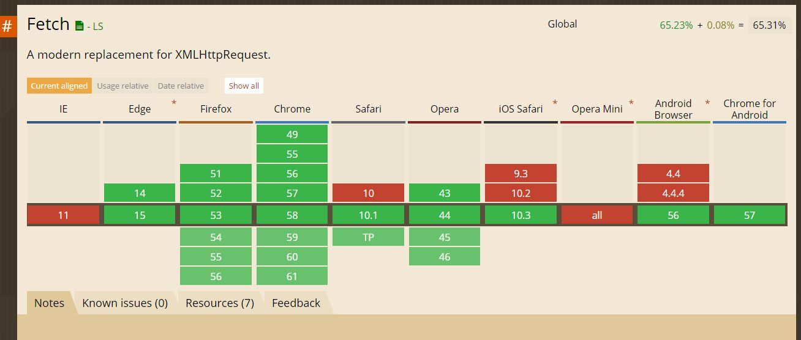
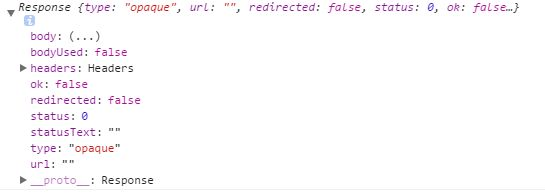
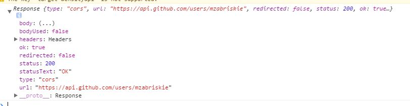
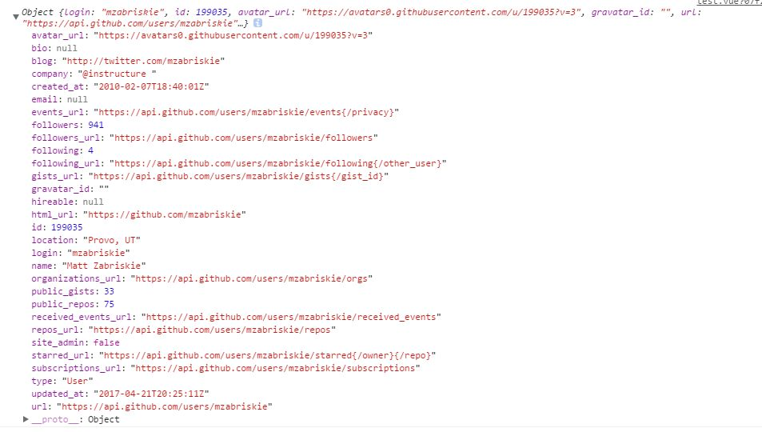

导读
传递信息到服务器，从服务器获取信息，是前端发展的重中之重，尤其是现在前后端分离的大前提下，前后端的数据交互是前端的必修科目了。从很久之前到现在，ajax都是每个前端入行者必须技能。当然为了便于开发者， 各种三方工具将ajax包装，然后给开发者使用，jquery、axios等等。这都不是今天的重点， 今天要说一个JavaScript原生的获取资源接口 Fetch API， 虽然各大浏览器支持率不高，但是这样的一个概念确实值得了解学习，并且现在我们可以通过polyfill来实现不同浏览器的兼容性问题
Fetch
先来看看各个浏览器对fetch的原生支持情况，可以看到支持性并不是很高，safari在10.1 之后才支持，ios更是10.3之后才支持，IE完全不支持。当然新技术的发展总会经历这个过程。不过，想提前尝尝鲜也是可以的我们可以使用 polyfill

声明：以下的所有代码测试都是基于 Chrome 实现
废话不多说，
fetch 返回的是一个Promise，我们先来看一个基本的 fetch 结构
1 | fetch(url, option).then( res => { |
fetch 的url 参数是必须的，option参数可选
以上就是整个的请求以及处理过程， 惊不惊喜，意不意外，没错就是这么简单清晰明了，没有原生ajax的那些 XMLHttpRequest bulabula 一大堆。也不需要再额外引入一个jquery包（当然项目中使用到的话除外）。当然因为fetch的返回值是一个Promise， 不需要再去使用回调函数从而有效避免回调地狱。
当然，fetch不止于此，我们的需求也不止于此，我们可能需要post请求，可能需要跨域请求，控制从服务器获取的信息的格式（json、string、blob等），此时，便需要设置参数信息，对返回信息进行处理。
option
来看看fetch的可选参数option的可选值，fetch默认是get方法，也可以在option中设置为其他方法
- method：get | post 等方法
- headers：任何你想加到请求中的头，可以是对象字面量的方式也可以是通过 Headers
- body：发送给服务器的信息， 可以是JSON, BufferSource, FormData, URLSearchParams, 或 USVString。注意get和HEAD请求没有body
- mode：请求模式， 可选值为 cors, no-cors, same-origin, 或 navigate，cors-with-forced-preflight。默认值应该为 cors。但在Chrome中，Chrome 47 之前的版本默认值为 no-cors ，自Chrome 47起，默认值为same-origin。–MDN Request
- credentials：在请求中是否需要凭据。在请求数据中根据是否需要携带Cookie 来设置其值，可选值为omit（在请求中不懈怠认证凭据（Cookie））, same-origin（在同原站点下包含凭据）, 或 include（对所有网站包含认证凭据）
- cache：如何处理缓存，可取值有 default | no-store | no-cache | reload | force-cache | only-if-cached
- redirect：对重定向的处理，可取值 follow, error, redirect
- referrer：一个指定了no-referrer, client, 或一个 URL的 USVString 。默认值是client.
- integrity: 包括请求的 subresource integrity 值 (e.g., sha256-BpfBw7ivV8q2jLiT13fxDYAe2tJllusRSZ273h2nFSE=).
mode
mode 参数便于 CORS， 设置不同的值可以使在不同的请求方式下，使得请求有效。
- cors：在同域和带有CORS响应头的跨域下可以请求成功
- no-cors：常用于在跨域不带CORS场景下， 此时请求发出并且会有响应，但是此时type为“opaque”， status为0 ，js获取不到返回数据。
- same-origin：在同域下请求
- cors-with-forced-preflight：在请求前进行preflight 检查
1 | fetch("https://api.github.com/users/mzabriskie", {mode: "no-cors"}).then(response => { |
执行以上代码返回

1 | fetch("https://api.github.com/users/mzabriskie", {mode: "cors"}).then(response => { |
以上代码返回

headers
该参数的值可以为对象字面量
1 | headers： { |
也可以创建 Headers 对象，通过append() 和delete() 等方法对其进行操作，
1 | var headers = new Headers(); |
Request
Fetch 提供了对 Request 和 Response （以及其他与网络请求有关的）对象的通用定义。所以在一个Fetch请求中，完全可以只使用Request 和 Response两个对象，通过Request 设置参数，通过Response 对返回值进行处理。
一个Fetch还可以写成以下形式
1 | var myHeaders = new Headers(); |
参数设置如 option 下介绍
Response
Fetch API 的Response接口呈现了对一次请求的响应数据
其包含一次请求的响应信息，响应状态等。
包含的一些常用属性（只读）
- url：包含请求地址url
- status：响应状态码（200成功）
- ok：一个布尔值标识请求成功或失败
- statusText：包含与状态码对应的状态信息
- headers：包含于请求关联的Headers对象
方法
- clone()： 创建Response对象的克隆
Response可以使用以下方法，对响应数据进行处理
arrayBuffer()、blob()、formData()、json()、text()等
以下为使用json() 方法返回的数据信息
1 | fetch("https://api.github.com/users/mzabriskie", {mode: "no-cors"}).then(response => { |

检测请求是否成功
同XMLHttpResponse一样，请求发出，服务器发出返回码，除了407以外，其不会进入错误捕捉。也就是说除了网络故障或者跨域请求被拒绝等请求失败的情况，fetch() 的Promise是不会 reject的，所以为了请求能按照我们的预期实现，我们必须加一个判断，判断请求是否成功并返回了我们想要的数据。我们当然可以像 XMLHttpResponse 一样对响应的状态码进行判断，不过我们还有选择，对response.ok 这个布尔值入手。
细心的同学可能从之前的截图中看到，在请求成功和失败的情况下，属性 ok 的值 分别为true 和false 这里就不赘余天价截图了，上代码
1 | fetch("https://api.github.com/users/mzabriskie", {mode: "cors"}).then(response => { |
致此， 一个 fetch 的简单请求便完成了，但是fetch功能远不止这些
fetch 与 ES7的async/await 搭配使用等等，路很长一步一脚印
参考链接
Fetch API - Web API 接口 | MDN
Request - Web API 接口 | MDN
Headers - Web API 接口 | MDN
Response - Web API 接口 | MDN
Body - Web APIs | MDN